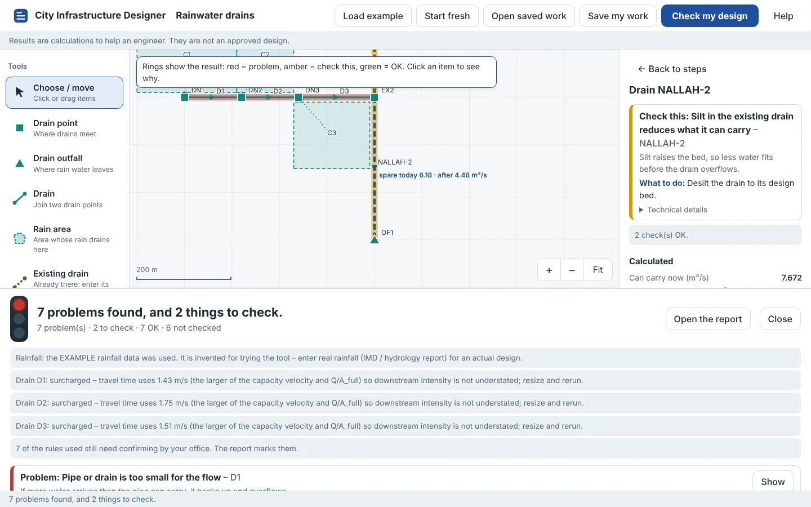
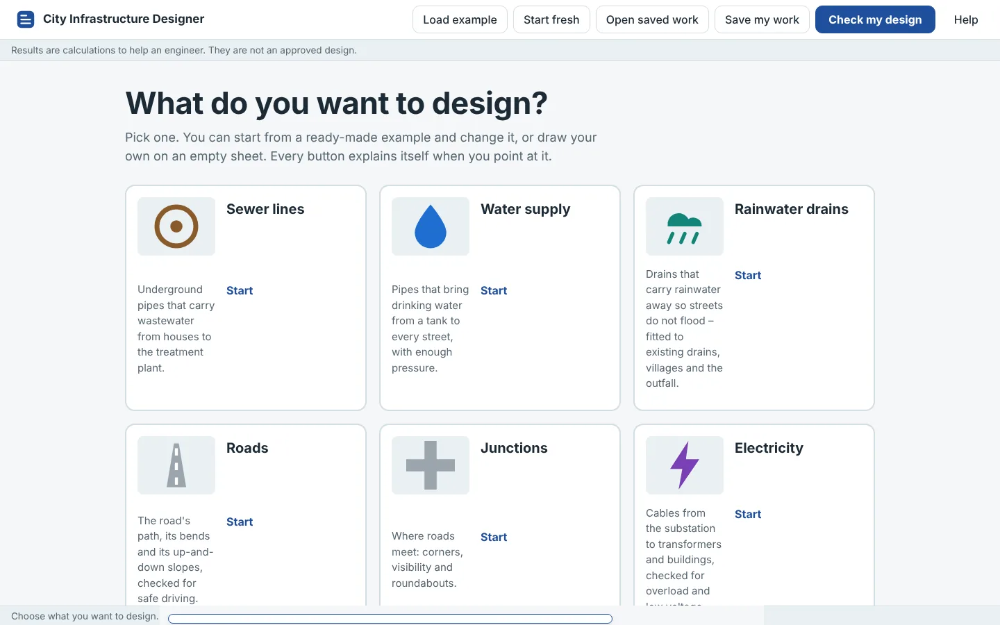
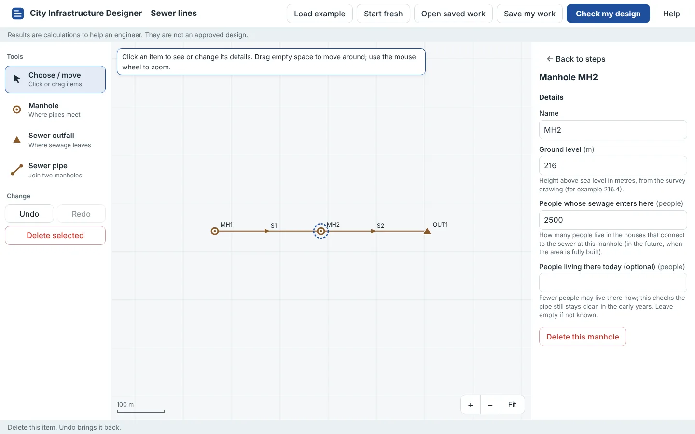
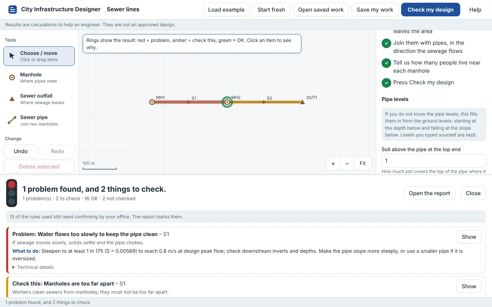
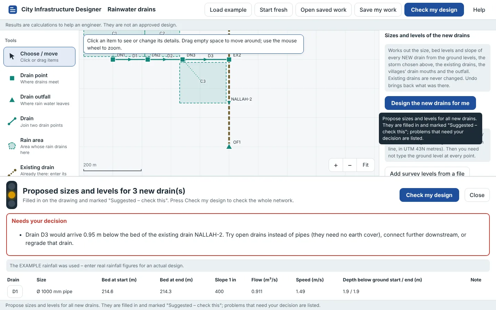
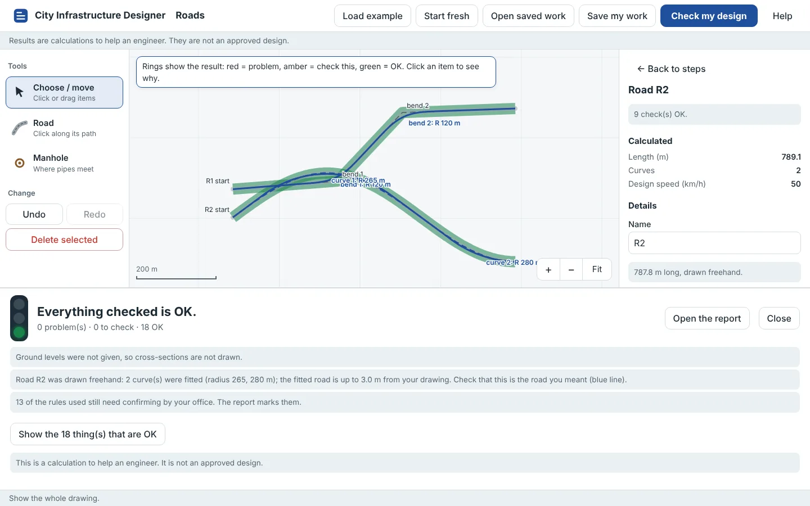
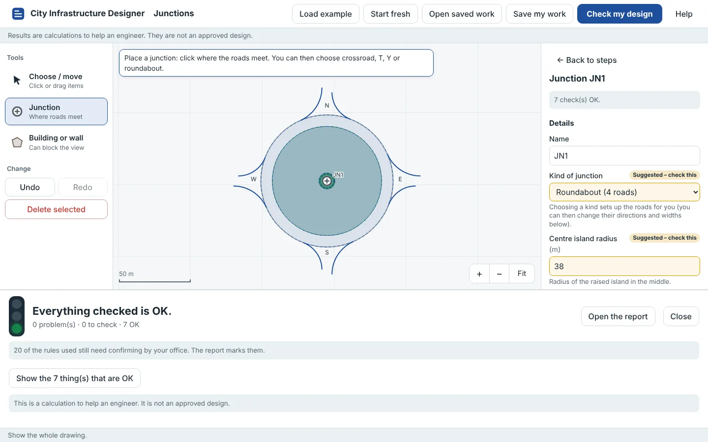
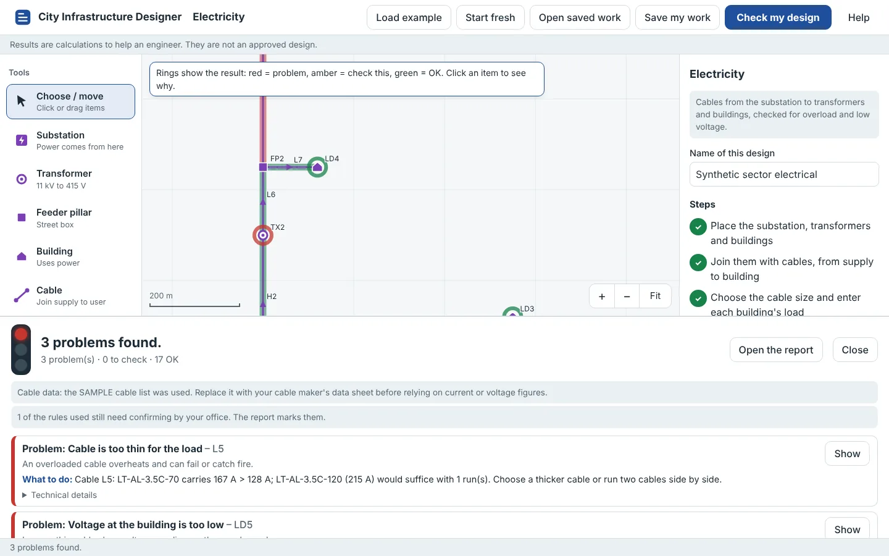
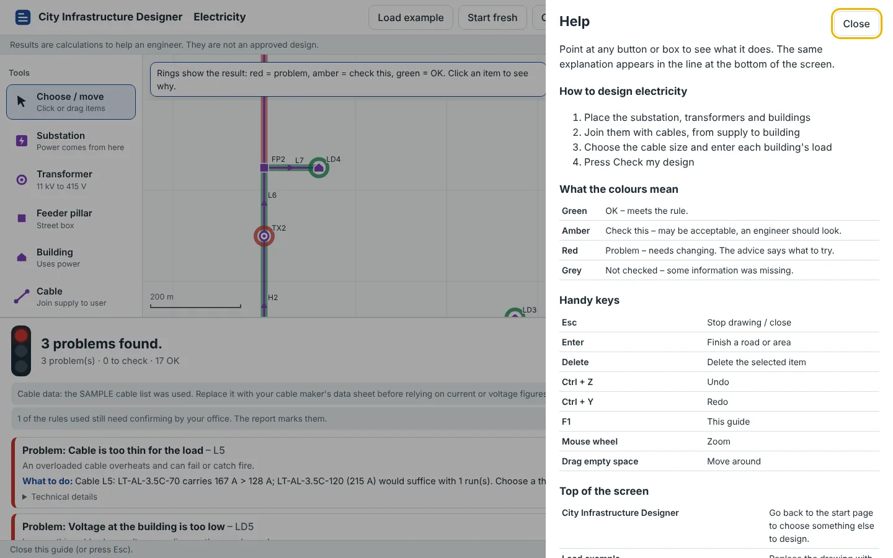

Draw the services of a new sector. Check them against the codes. Hand the engineer a traceable report.
Sewers, water lines, rainwater drains, roads, junctions and electricity cables, drawn on a plan and checked against CPHEEO, IRC and project rules. Every result is in plain words, with the figures and the rule behind it.

What it designs
Hydraulic design and road geometry. Structural (RCC) design, pavement thickness and quantities are deliberately left out.
-
Sewer lines
Manning partial flow, peak factors, self-cleansing in the early years, cover, manhole spacing, no pipe getting smaller downstream, crowns matched. EPA SWMM simulation.
-
Water supply
Demand from population and litres per head, residual pressure at every point, solved by EPANET 2.3.
-
Rainwater drains
Rational method with the project's rainfall (IDF), pipes, box and open channels, freeboard and velocities. Existing drains, villages and outfall flood levels taken into account. EPA SWMM storm simulation.
-
Roads
Any shape: bends with radius and transition, or freehand with curves fitted. Minimum radius, transitions, reverse and broken-back curves, grades, vertical curves, superelevation.
-
Junctions
T, Y, crossroads and roundabouts: kerb returns for the design vehicle, sight triangles with obstructions, entry and exit radii, weaving lengths and capacity.
-
Electricity
Substation to transformer to feeder pillar to building: demand and diversity, transformer loading, cable current and voltage drop, with size proposals.
How it works
The program is built to be used by someone who is not a specialist. Every button explains itself when you point at it.
Draw
Place manholes, drain points or transformers. Join them with pipes, drains or cables. Draw roads by clicking at each bend, or freehand.
Fill in
Ground levels, people served and loads. Values the program suggests are marked Suggested – check this. Survey levels can be loaded from a CSV file.
Check
Results come in plain words, with why each one matters and what to change. Each item also has its figures, the rule used, the rule's source, and whether that rule is verified.
Hand over
A full report for the engineer, with the method, the design sheet, the simulation results and a blank approval block.
New sectors next to what already exists
A new sector has to drain into nallahs and drains that are already there, past villages whose levels cannot be changed.
Spare capacity of existing drains
Each existing drain gets the same set of figures: what it can carry today with its present silt, the flow already in it, its spare (residual) capacity, the load the new areas add, and how much desilting would gain.
Villages keep their levels
The receiving drain must stay at least 0.15 m below the mouth of a village drain, so the village water still flows out.
Outfall and flood level
New drains must not arrive below the outfall bed. A river or nallah flood level above the drain's water level is reported as backwater.
Sizes and levels proposed
Design the new drains for me proposes size, bed levels and slope for every new drain from the ground, the storm, the existing drains and the outfall. Anything that cannot work is listed for decision. Nothing is changed without the designer accepting it.
| Nallah reach | Can carry now | Flow today | Spare today | New areas add | Used |
|---|---|---|---|---|---|
| NALLAH-1 | 3.26 | 1.67 | 1.60 | 0.00 | 51 % |
| NALLAH-2 | 7.67 | 1.49 | 6.19 | 1.71 | 42 % |
Flows in m³/s, 5-year storm, using the program's sample rainfall, which is invented for trying the program. Silt of 0.25 m and 0.30 m is included. Desilting NALLAH-2 would raise what it can carry to 9.60 m³/s.
Screens
Taken from the running program.








Engineering basis
Rules you can trace
Every design value lives in a rule file with its document, clause and state: verified, project decision or needs confirming. The report lists the rules used. No value is built into the code.
Real engines
EPA SWMM 5.2.4 for sewer and storm networks and EPANET 2.3 for water networks, called directly. If an engine is missing, the program says the simulation was not run. It never shows invented figures.
Calculation is not approval
A result is a calculation for an engineer. Objects keep their status: existing, proposed, calculated, checked, approved. Approval is always a person's act, and a frozen revision cannot be changed.
Tested on every change
148 automatic tests, a browser walk-through of every screen, the database scripts, Windows and a server image all run on each change to the code.
Status, October 2026
| Part | State | Notes |
|---|---|---|
| Sewer, water, storm drainage, roads, junctions, electricity | Working | Design checks, simulations, reports |
| Existing drains, villages, outfalls, survey levels, proposed drain sizes | Working | Drainage module |
| The simple app for non-specialists | Working | Windows, Mac, Linux; runs in the browser |
| One sheet for all services on a real map | Next | Basemap and the data sources to be decided |
| Import of existing data (DXF, shapefile, master plan) | Next | |
| Natural drainage paths from the survey, utility corridors and clash checks | Next | |
| PNG (gas) and telecom | Later | |
| RCC / structural design, pavement thickness, quantities | Not included | By decision |
Run it
On a Windows computer
- Install Python 3.11 or newer from python.org (tick Add Python to PATH).
- Download the project from GitHub (Code → Download ZIP) and unzip it.
- Double-click
start-app.bat. It installs what it needs the first time, then opens the designer in the browser.
In Visual Studio Code
- Open the project folder.
- Accept the recommended extensions.
- Press F5 and choose City Infrastructure Designer. Tasks for tests and the engines are under Terminal → Run Task.
Source code
github.com/manohariitroorkee-cyber/Cloud-session, branch platform/foundation-stage1. Start with START-HERE.md.
Before relying on any result
Many design values are still marked needs confirming against the printed codes. The sample rainfall and the sample cable list are invented, for trying the program only. A qualified engineer must review and approve every design.